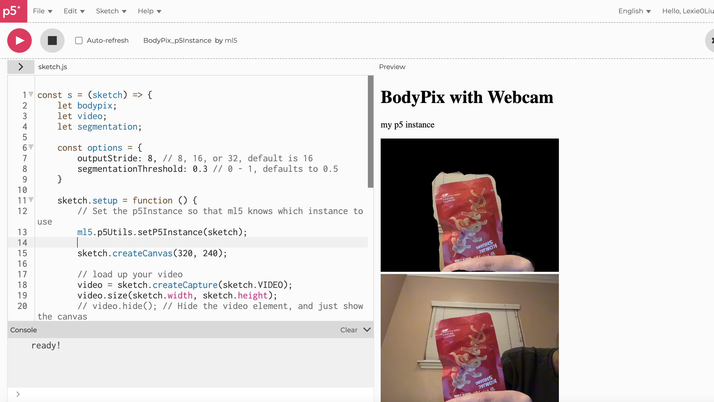
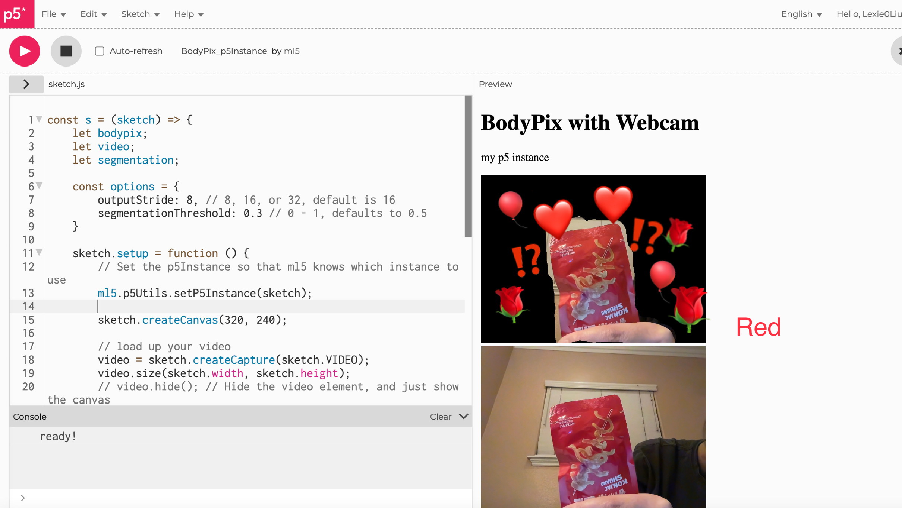
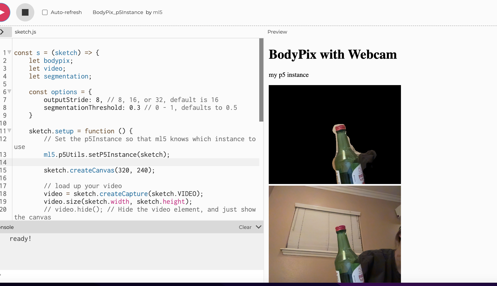
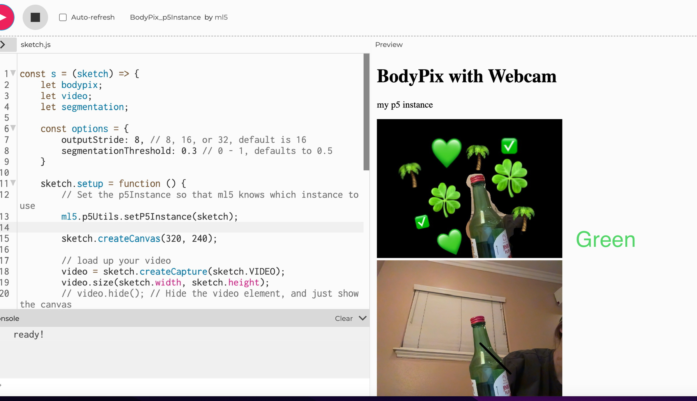
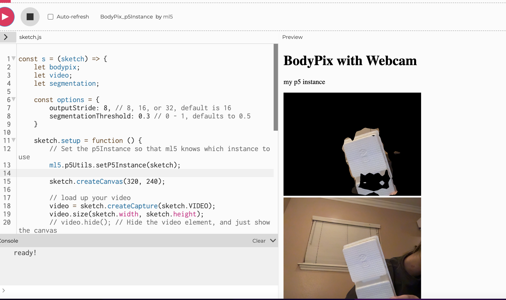
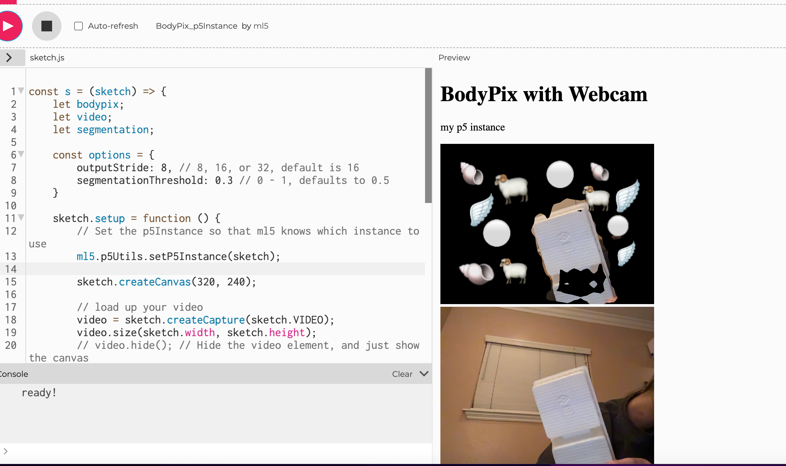
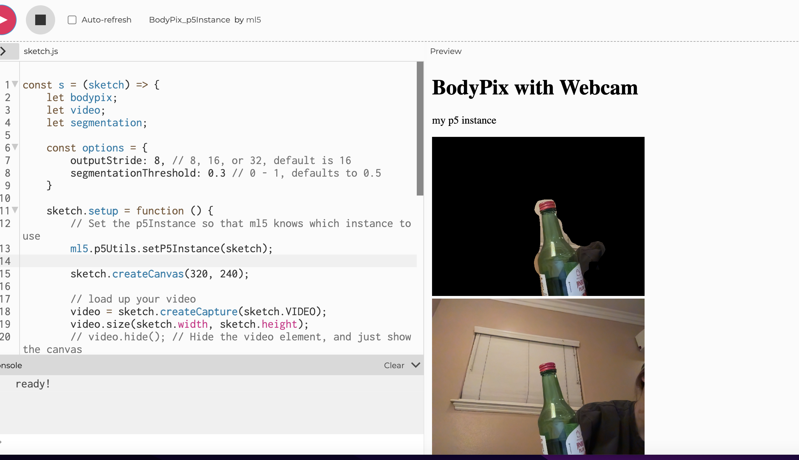
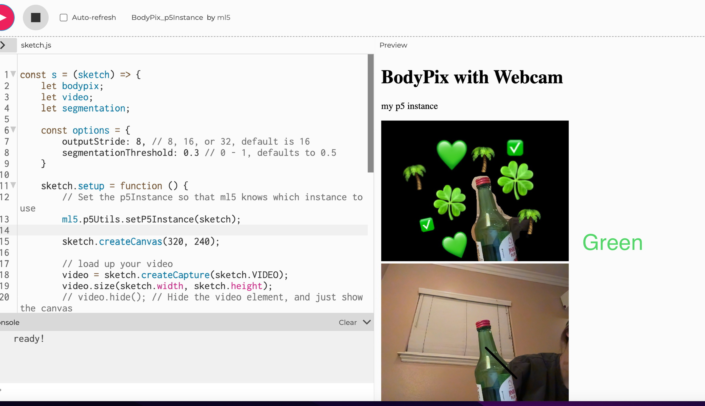
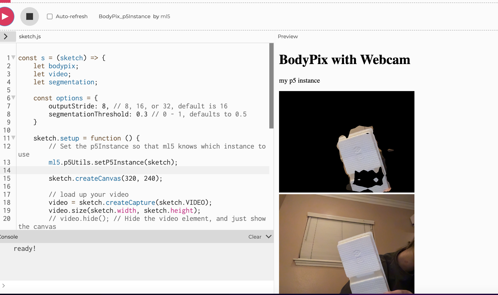
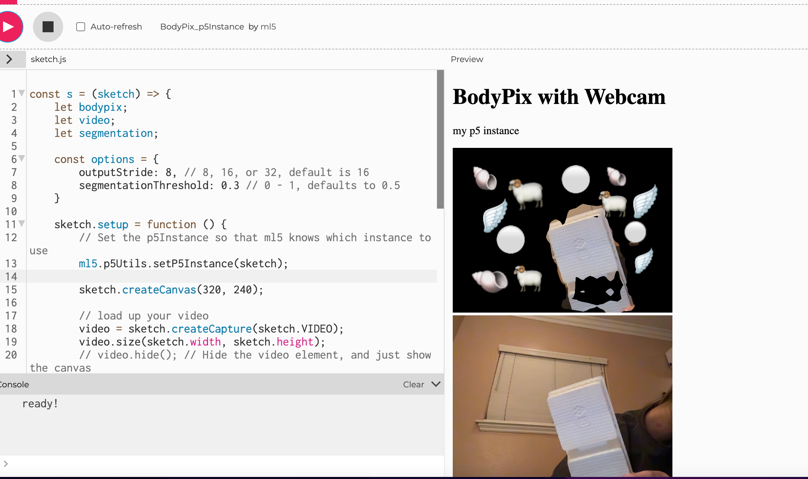

Week8 Assignment--pFormulate the proposal for an interactive experience
Reference & Inspiration
First of all, I want to use this effect to subtract the main character or object from the background. Users can choose the color they like for display.
Later, using this type, we can identify codes of different situations and different colors. I want to set several common colors, namely black, white, red, yellow, and blue. (The picture shows the difference between day and night)


 
 
 
 
These last are the renderings of my imagination